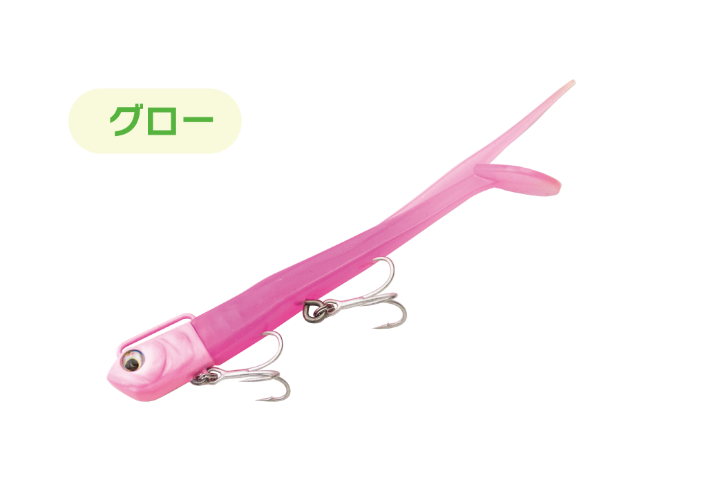
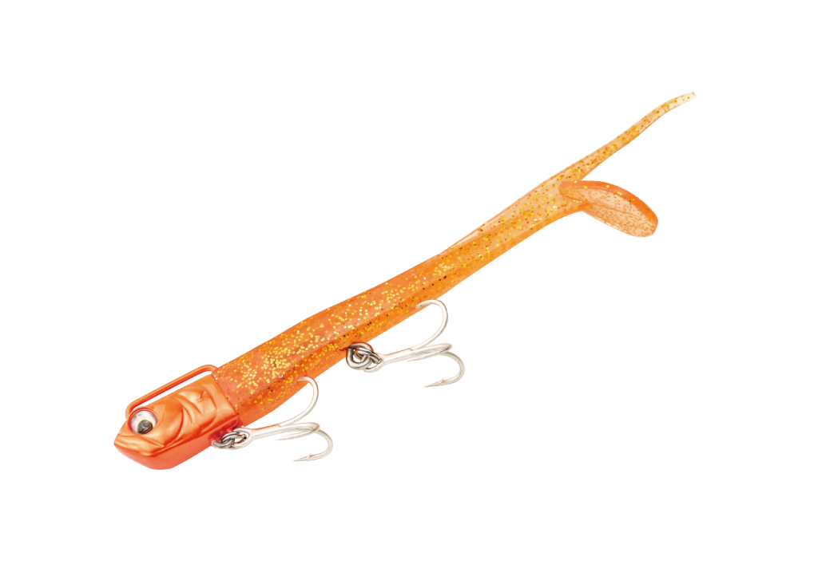
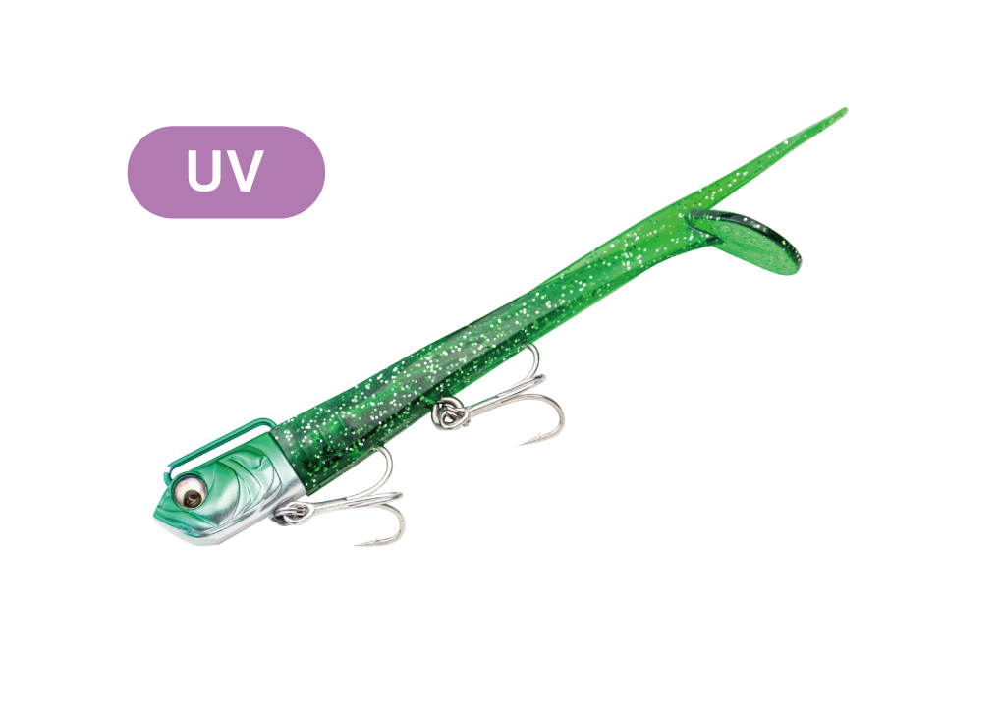
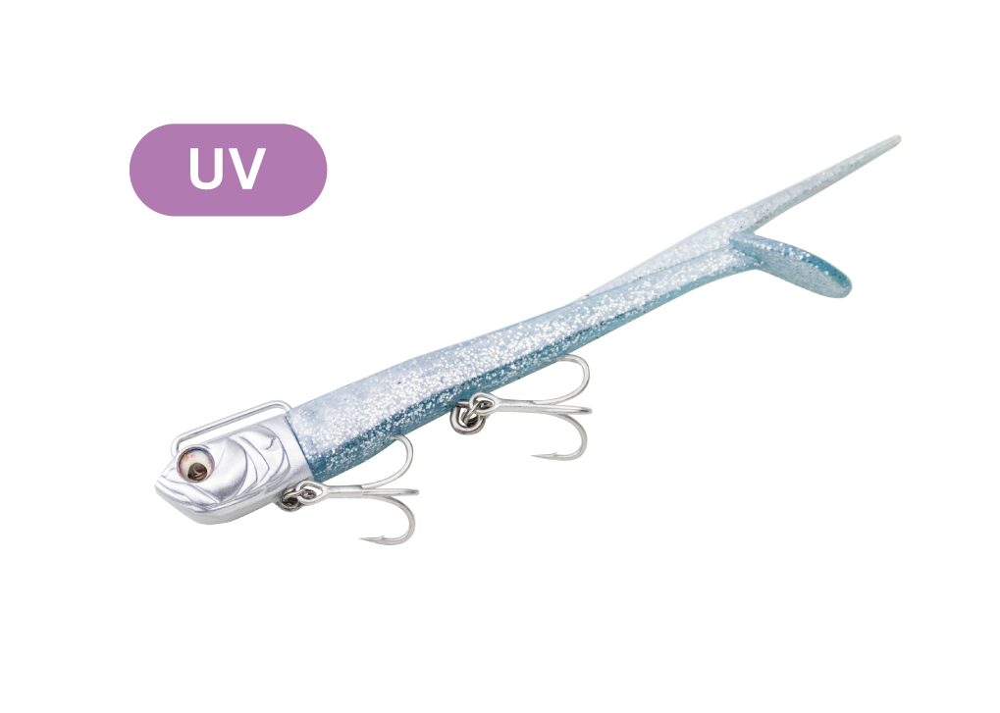

サリュー
（SARYU）
サリュー（SARYU）はADUSTA（アダスタ）のサーフ用ジグヘッドワームです。
「圧倒的な飛距離」をテーマに開発され、飛ばすことを徹底的に追求したヘッド形状と遊動式ラインアイを採用。空気抵抗を極限まで減らした細身のワームとの組み合わせで、30gなら90m Overのキャストができるのが最大の魅力です。

画像出典:ADUSTA公式HP
スペック
- メーカー
- ADUSTA（アダスタ）
- タイプ
- ジグヘッドワーム（サーフ用）
- ワーム
- 4.5インチ
- 重さ
- 15g・22g・30g
- フック
- BKK Fangs 62-UA #6（前後2本）
- スプリットリング
- #3
- ヘッド
- 長さ18mm・目の色は赤
- 参考飛距離
- 30g：106m（追い風）／77m（向かい風）
- ターゲット
- ヒラメ・マゴチなどのフラットフィッシュ
- 価格
- 1,870円〜1,925円（税込）
▼今すぐチェック

サリューの特徴
「圧倒的な飛距離」をテーマに開発した、遠投特化のジグヘッドワーム
-
飛ばすことを追求したヘッドと遊動式ラインアイ
遠心力を最大化する長めの誘導式アイと、ヘッドの先端から後ろへ絞った前方重心の設計で、安定した飛行姿勢を実現。狙ったピンスポットへの正確なキャストにも強い。
-
細く張りのあるワームで空気抵抗を最小限に
ジグヘッドワームでは類を見ないほど細いボディで、空気抵抗を減らして飛距離を伸ばす。ワームに張りがあるので、キャスト時にフックに絡むトラブル（エビ）も起きにくい。
-
シャローでもレンジキープしやすいヘッド形状
特徴的なヘッド形状で、浅いエリアでも水面下をキープしてリトリーブできる。ヘッドとフックのすき間を大きくとった設計で、砂を噛みにくいのもサーフ向き。
サリューの使い方
ただ巻きでは、底を擦らない程度のスピードが基本。実際のベイトフィッシュよりやや遅い速度を意識すると、ナチュラルに誘えます。活性が高い時やリアクションを狙う時は、やや速めに巻いてストップ&ゴーを組み合わせ、食わせの間を作ります。
リフト&フォールでボトムを狙う時は、着水後にフリーフォールで着底させ、底付近でリフト幅に変化をつけながら探る。中層を狙う時は、着水後すぐに糸フケを取ってカーブフォールで沈め、中層でリフト&フォールを繰り返します。
サリューの得意な状況
遠浅のサーフで、沖のカケアガリや離岸流まで届かせたい状況が最大の出番。向かい風の日でも飛距離を出しやすく、ほかのルアーでは届かないポイントを攻められます。
浅いエリアでも水面下をキープして引けるので、シャローに差してきたヒラメ・マゴチを狙う時にも選びたい1本です。
ほかのルアーが届かない沖のポイントまで探れるので、サーフで釣れるチャンスを広げられるジグヘッドワームです。
ワンポイント
テールをカットするとアクションの強さを変えられます。純正のままが一番強く、シャッドテール状にカットすると中くらい、ピンテール状にカットすると一番弱いアクションになります。反応が渋い時は、カットして動きを抑えてみるのもオススメです。
最大飛距離を出すには、スナップを付けて、前後のフックをワームに刺した状態で投げましょう。
サリューの使い分け
| モデル | 価格 | 得意な場面 |
|---|---|---|
| 15g | 1,870円（税込） | 浅い場所をゆっくり攻めたい時に（旧カラーのみの販売） |
| 22g | 1,870円（税込） | 飛距離とスローな引きやすさのバランス型 |
| 30g | 1,925円（税込） | 90m Overの最大飛距離。向かい風や沖のポイントに |
サリューは15g・22g・30gの3種類。浅場をゆっくり引くなら15g、迷ったら22g、飛距離最優先なら30gと使い分けます。ヘッドとリアフックが2セット入った「サリュー スペアヘッド」も別売りされているので、ワームやヘッドの色を組み替えて使うこともできます。
人気カラー
サリューは2025年の新色6色を展開。その中から人気カラーを紹介します。

パステルピンクフラットフィッシュ狙いの定番カラー。朝〜昼の時間帯に試したい、バランスの取れた色。

バンノーオレンジ朝方から午前中に使いやすいクリアオレンジ。やや濁った水や日中の釣りにもなじみやすい。

ジェイドグリーン濁りのある状況に対応しやすいグリーン。特にマゴチが狙える季節にオススメ。

白銀白い背中とラメ入りのクリアな腹。UV反応が強く、夕マズメや浅場、ローライト時に。
画像出典:ADUSTA公式HP
▼今すぐチェック
サリューに似ているルアー
-
 ぶっ飛び静完全セット
カルティバ
詳細はこちら＞
ぶっ飛び静完全セット
カルティバ
詳細はこちら＞
20・24・30gのサーフ用ジグヘッドワーム。シャッドテールで底付近をじっくり見せたい時に。
-
 ジョルティ
ブルーブルー
詳細はこちら＞
ジョルティ
ブルーブルー
詳細はこちら＞
15・22・30gの4インチジグヘッドワーム。ハイピッチローリングの強い波動で広く探りたい時に。
-
 砂団子
ジャクソン
詳細はこちら＞
砂団子
ジャクソン
詳細はこちら＞
フラットフィッシュ用のワーム。同じサーフのヒラメ・マゴチ狙いで、ローテーションの1本に。